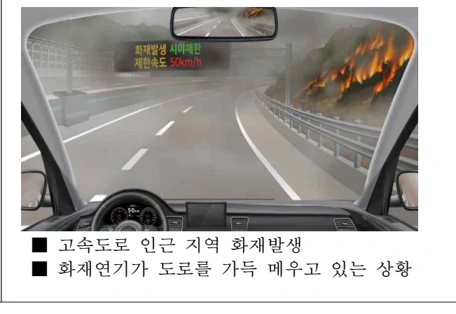

831. When passing through an area affected by a fire as in the given situation, which of the following are the TWO proper ways to proceed?

- ①Speed up and drive away quickly even if it means exceeding the speed limit, to avoid being trapped.
- ②Turn on the hazard lights and drive carefully due to poor visibility ahead.
- ③Use the radio or other sources to obtain information about detour routes.
- ④Set the vehicle’s air system to external circulation to get fresh air.
- ⑤Park on the shoulder and leave the road by climbing over the right-side guardrail.
Show answer
Answer
② Turn on the hazard lights and drive carefully due to poor visibility ahead.
③ Use the radio or other sources to obtain information about detour routes.
Reference
Driving through a fire zone is dangerous, so even if it means taking a longer route, it is safer to use traffic information and take a detour. Additionally, as visibility is limited due to fire smoke, etc., you must turn on your emergency lights and drive slowly to exit the area.
Reference text is a machine translation for study.